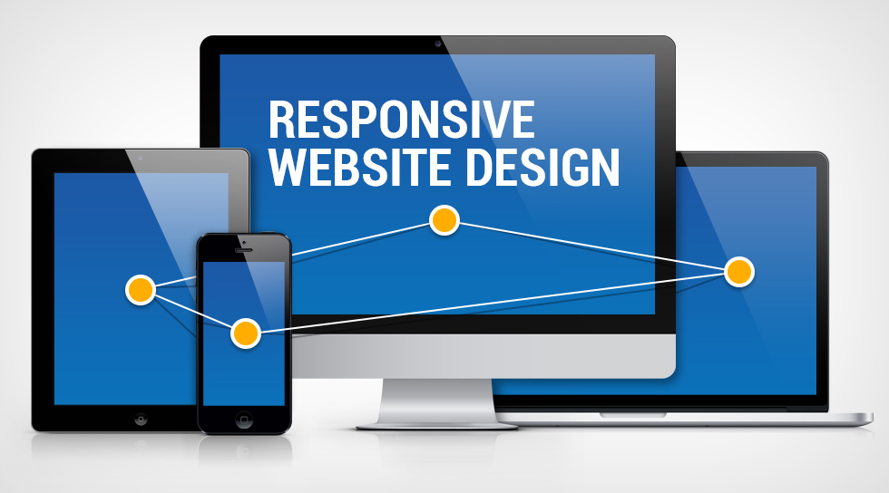

User Research skills

Responsive Web Design

Usability Testing
Sniff, a social App for pet lovers
Tripler, we make travel even Better
Edu Department, a RWD
User Research skills
Responsive Web Design
Usability Testing
my next project will be your product
Tiffany always has a passion for art, literature, creative living and design. Being an UX and UI designer gives her opportunities to further develop her potentials. She is an educator, conference interpreter and literature translator Tiffany likes to bring up her previous working experience, hobbies and talents into the UX, UI industry-using the storytelling skills from literature to promote product; educational skills to provide product tutorials as well as user testing; and interpreting skills to communicate with clients, stockholders and other teammates.